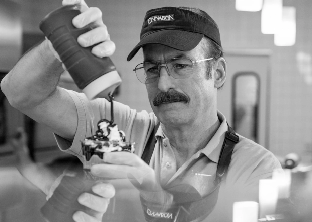

Middling Midwest Cinnabons

Cinnabon; It's not great, but it's not bad either
What better exemplifies middling than a Cinnabon from a shopping mall somewhere in the Midwest?
Not many people would consider a Cinnabon fine dinning, but it probably beats the cold ham and cheese rolls served in the church basement/annex.
Find yourself right in the middle by following these simple steps
Ingredients
- One (1) fall from grace
- One (1) Midwest metropolitan area/city
- One (1) new identity
Instructions
- Unwrap the fall from grace and soak it in warm water
- Identify the Midwest Metropolitan area of your choice. It should be big enough that people don't typically know all of their neighbors, but not too big that it is a major destination which people would typically travel to
- Once you have selected the Midwest metropolitan area of your choice, and While the fall from grace is soaking (in), prepare the new identity for entry into midwest society by doing the following:
- Gain employment - think middle management at a mid-sized corporation
- Find housing - a one year lease on a split level ranch works best
- Get transportation - a used, light colored, sedan is recommended
- After the fall from grace has fully soaked (in) and a new identity prepared, establish a routine that is very inconspicuous.
- Proceed to follow the newly established routine on a daily basis; making sure to avoid any extremes or unnecessary attention